In this writing, I want to share how building the same Contoso semantic model twice, once with the fact table in Direct Lake mode and once fully in import mode, turned the storage-mode decision into something I can explain with my own numbers.
The plan was deliberate. I wanted to experiment with the storage-mode decision myself instead of deciding from reading alone. So I took the composite model from my previous post, built an import-mode twin of it against the same lakehouse, and pointed DAX Studio at both. The question I wanted answered: when everything else is identical, what does the storage-mode decision actually consist of?
1. Building the Twin: One Table, Two Partitions
My starting point was the directlake_import_composite model from the calculated-columns experiment: a composite model whose sales fact table reads its Delta table from Lakehouse_Contoso in Direct Lake mode, with date, product, store, and customer as import dimensions. The twin, contoso_import, keeps every measure, every relationship, and both calculated objects, and switches the fact table to import mode through the lakehouse SQL endpoint.
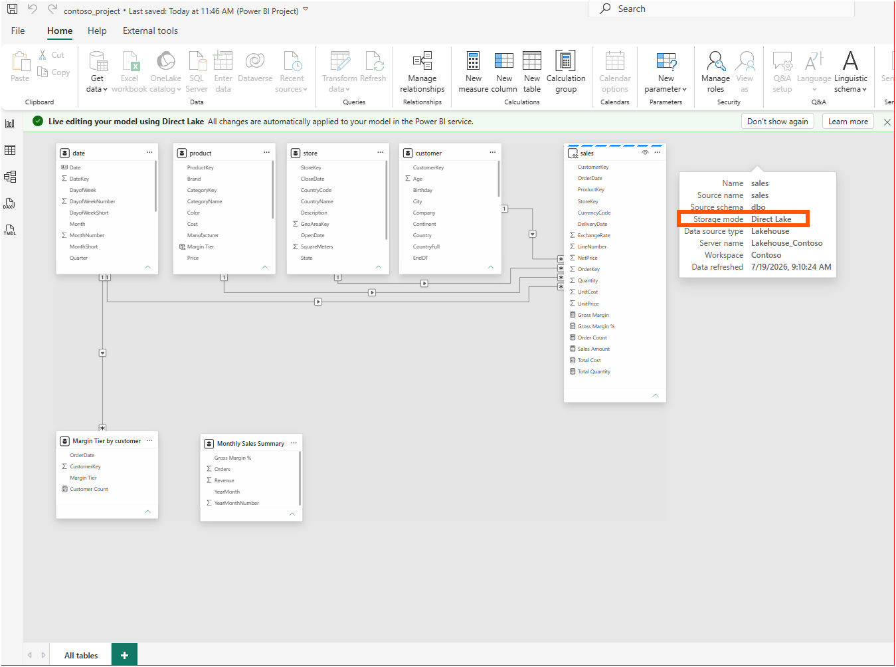
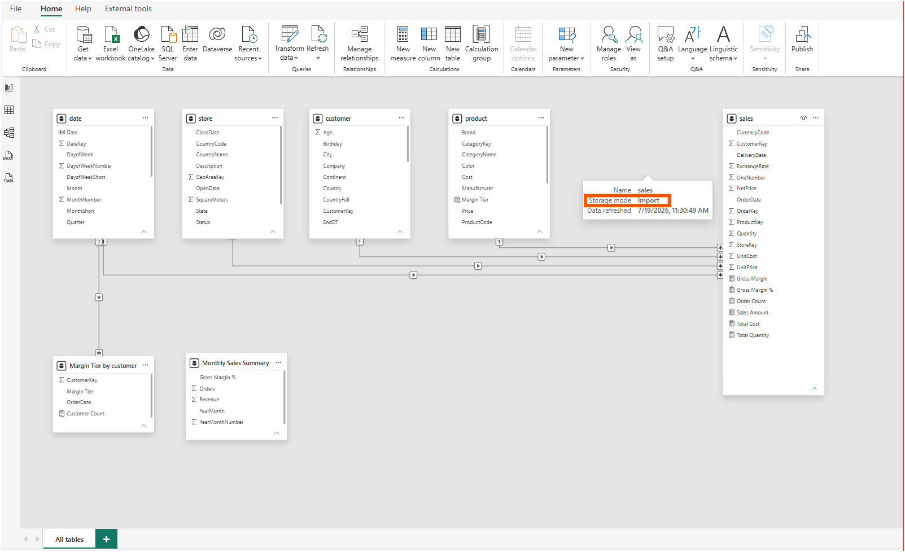
Because both models are Power BI Projects on disk, the comparison is not a settings dialog. It is a file diff. The two screenshots below show the sales partition in each model's sales.tmdl. The composite model declares an entity partition with mode: directLake, pointing at the shared expression 'DirectLake - Lakehouse_Contoso'. The import twin declares an M partition with mode: import, reading the same dbo.sales table through the lakehouse SQL endpoint.
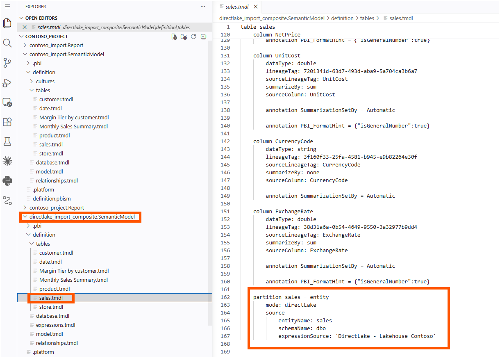
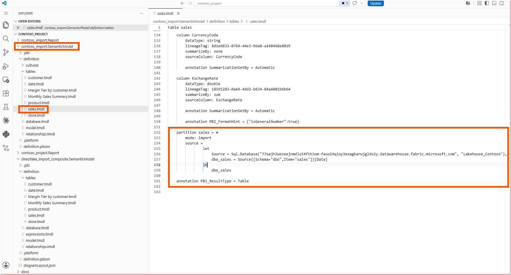
Here's the first aha moment that reshaped my understanding: the semantic difference between the two models is one partition block. All six measure expressions are identical in both files; Sales Amount is the same SUMX over Quantity and NetPrice in both models, and the same relationships connect the same tables. The raw file diff is noisier than that one block, because building the twin also changed housekeeping metadata: lineage tags, default summarization on the key columns, date format strings. None of that noise touches a measure or a relationship. The one structural difference I already knew about from the previous post is that the calculated column and calculated table cannot live on a Direct Lake table, which is why both twins keep them on the import side of the model.
To be precise, the partition block does not travel alone, and I do not treat this as a one-line switch between the two modes. The entity partition points at a shared expression that only the composite model carries in its expressions.tmdl; the "Power Query connectors" section of Develop Direct Lake semantic models explains that a Direct Lake on OneLake model reads OneLake through the Azure Data Lake Storage connector in exactly this kind of shared expression. The composite's database.tmdl sits at compatibilityLevel 1606 while the import twin sits at 1600, and the "Considerations and limitations" table of the Direct Lake overview states that tools must support compatibilityLevel 1604 or higher to work with Direct Lake semantic models. And the import twin keeps a local cached copy of the model and data in .pbi/cache.abf, the file that the ".pbi\cache.abf" section of Power BI Desktop project semantic model folder documents as the locally cached model and data, while the Direct Lake model carries no local data cache at all.
Same measures, same relationships, same lakehouse. Different partition, and the files around it that the partition depends on.
2. Racing the Two Models in DAX Studio
For the benchmark I reused the objects the previous experiment created:
EVALUATE
SUMMARIZECOLUMNS (
'date'[YearMonthShort],
'Margin Tier by customer'[Margin Tier],
"Sales Amount", [Sales Amount]
)I ran it twice against each model with Server Timings recording and Clear on Run enabled, so the storage engine cache never answered for a previous run; all four traces show SE Cache at 0%.
The composite model, with sales in Direct Lake mode, came back in 203 ms on the first run and 188 ms on the second, with the storage engine (SE) taking about 92% of the time and the main scan reporting 172 ms of SE CPU at x0.9 parallelism. The import twin answered in 243 ms on its first run and 107 ms on its second, with its scan burning 734 ms of SE CPU at x3.3 parallelism on the first pass.
The first two captures below are the composite model with the Direct Lake fact table, first run and then second run.
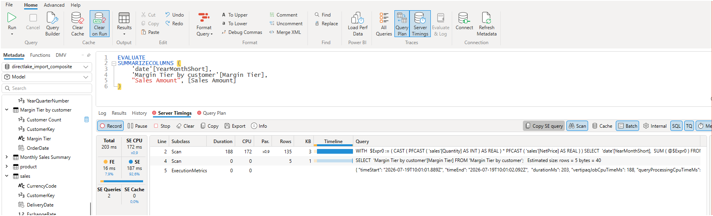
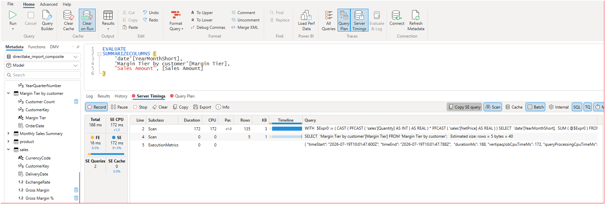
And these two captures are the import twin, first run and then second run.
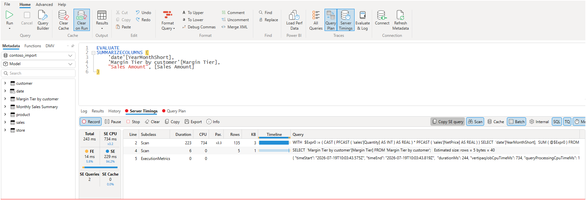
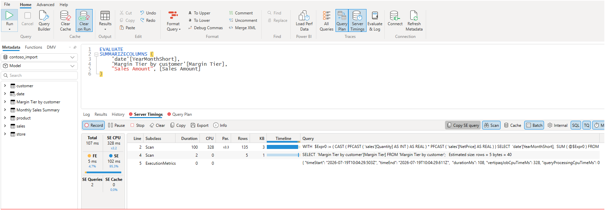
Two details in those panes deserve naming. The import twin's second run was the fastest result on the board, and I did not find a documented explanation for its first-run gap, so 243 ms against 107 ms stays a recorded observation rather than an explained one. On the Direct Lake side, the "Column loading (transcoding)" section of How Direct Lake works explains the cost model: column data loads from OneLake only when a query requests a column for the first time, and columns already resident stay in memory for later queries. The parallelism gap between x0.9 and x3.3 is an observation I want to be careful with: I can see it in the trace, but I have not confirmed what drives it, so it stays a question rather than a conclusion in this post.
On a fact table this size, the honest summary is that both models answer in a fraction of a second. Nobody looking at a report page would notice 80 ms. The decision has to rest on something other than my stopwatch.
3. Watching the Columns Load
The memory probe uses INFO.STORAGETABLECOLUMNSEGMENTS(). The "Return value" table in its Microsoft Learn reference documents columns that may indicate whether a segment is pageable, whether it is currently resident, and a temperature reflecting how recently and how often the segment has been accessed; the "Remarks" section adds that the function needs write permission on the semantic model.
EVALUATE
SELECTCOLUMNS (
FILTER (
INFO.STORAGETABLECOLUMNSEGMENTS (),
SEARCH ( "sales", [TABLE_ID], 1, 0 ) = 1
),
"Column", [COLUMN_ID],
"IsPageable", [ISPAGEABLE],
"IsResident", [ISRESIDENT],
"Temperature", [TEMPERATURE],
"LastAccessed", [LAST_ACCESSED]
)The sequence on the composite model: run the residency query for a baseline, run the benchmark from section 2, then run the residency query again and compare.
The baseline already told a story. Every sales column reported IsPageable as True, the columns my earlier DAX Studio runs had touched were resident with small temperatures, and the columns nothing had queried, LineNumber, DeliveryDate, UnitPrice, CurrencyCode, were not resident at all.
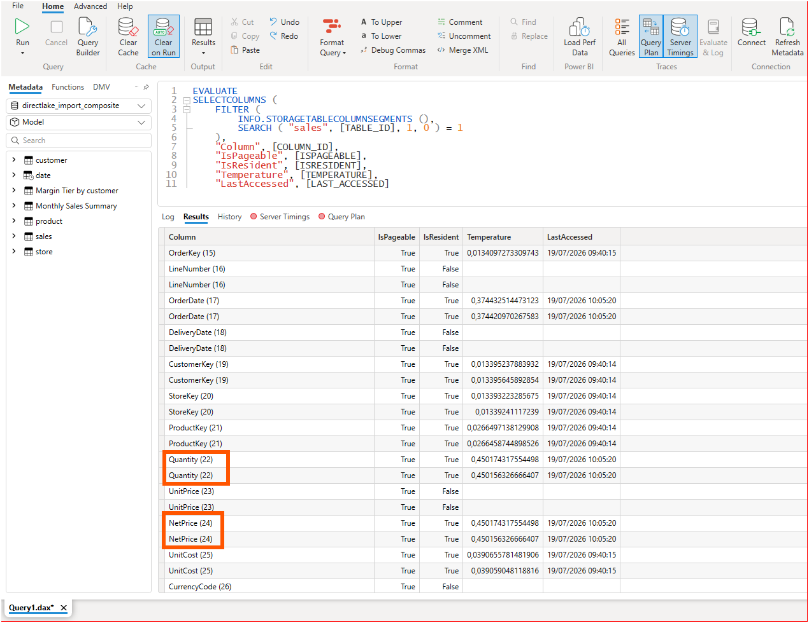
Then I ran the benchmark once and asked again. Quantity and NetPrice, the two columns inside Sales Amount, jumped from a temperature of about 0.45 to about 3.14, and their LastAccessed timestamps moved to the moment of the run. The untouched columns stayed non-resident, and the resident columns the benchmark did not need cooled slightly.
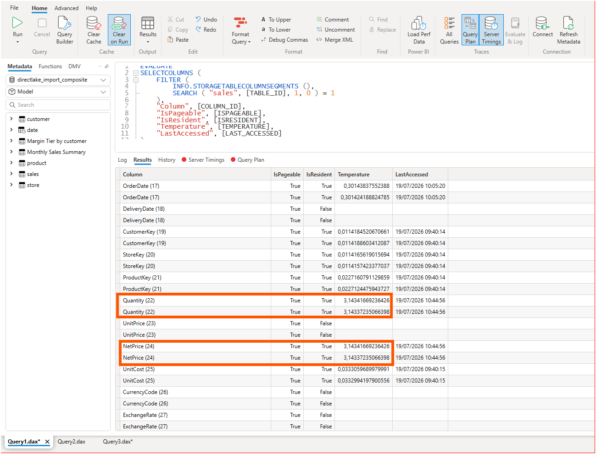
This was the aha moment. The engine heated exactly the two columns behind my measure and nothing else. Sales Amount never appears in this output, because a measure is not stored anywhere; what the storage engine actually reads is Quantity and NetPrice, and the temperature column shows it.
The import twin answered differently. Running the same query returned blank values for IsPageable, IsResident, Temperature, and LastAccessed on every segment. According to the "Return value" table of the Microsoft Learn reference, these columns are NULL when the paging feature is not supported on the server, and my import twin was running in a local Desktop session. Its output also listed far more segments per column than the composite model, which I suspect is related to the x3.3 parallelism in section 2, though I have not verified that connection.
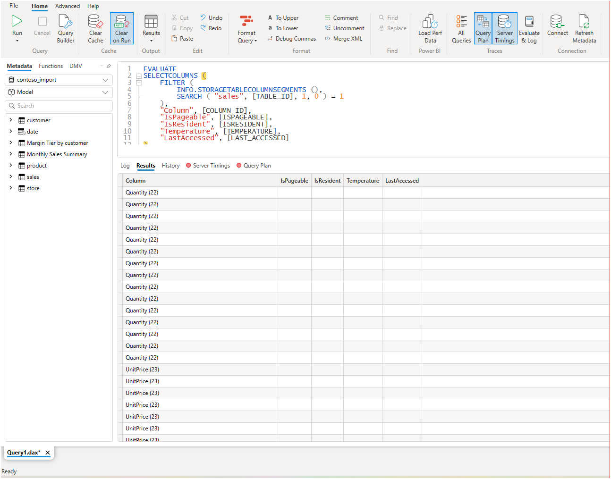
What I can say from my own trace is that the composite model's Direct Lake table pages columns in and out, and the temperatures track exactly what my queries touch. I am not claiming the import side never loads columns on demand; my local Desktop session simply reported no paging information to compare.
What separates the two modes in the end sits outside my stopwatch. The opening section of the Direct Lake overview describes an import refresh as replicating the data into the model, while a Direct Lake refresh copies only metadata, known as framing. Add the modeling limitations I hit in the previous post, and one partition block in the middle.
4. From a DevOps Standpoint: The Diff Is the Decision
From a DevOps standpoint, this is foundational.
Version control: the mode choice as a pull request. Because the storage mode is written into the model definition files, a migration between import and Direct Lake shows up as a reviewable diff: the partition blocks, the shared expression, and the compatibility level all change in files a pull request can display. A reviewer sees exactly which tables change mode, and the measures and relationships prove themselves unchanged by their absence from the diff. The diff is small, but it is not one line, and treating the migration as a reviewed change rather than a quick toggle is exactly the point.
Validation: the probes become scripts. Every piece of evidence in this post is a query. The benchmark is a DAX query, and the residency check is a DAX query. A team can keep both in the repository next to the model and rerun them before and after a storage-mode change, so the decision gets re-tested instead of re-debated whenever the fact table grows.
5. A Note on Learning with AI
I want to be transparent about the division of work here. I ran every experiment myself: I built both models, captured all four DAX Studio traces, and every screenshot comes from my own sessions. AI proposed which probes were worth running and wrote the first version of the INFO.STORAGETABLECOLUMNSEGMENTS() query. AI did not run anything against my models, and it did not build the import twin.
Closing Thoughts
This experience left me with a new mental model: storage mode is written in the model definition files, and what is written in files can be measured, diffed, and reviewed.
The choice between Direct Lake and import still depends on refresh cost and memory behavior on one side, and query behavior and calculated objects on the other. What changed for me is that I now treat the choice as a testable, reviewable change to the model definition files instead of an upfront architectural commitment.
I hope this helps having fun in building twin models of your own and embracing this new era of measuring before deciding!